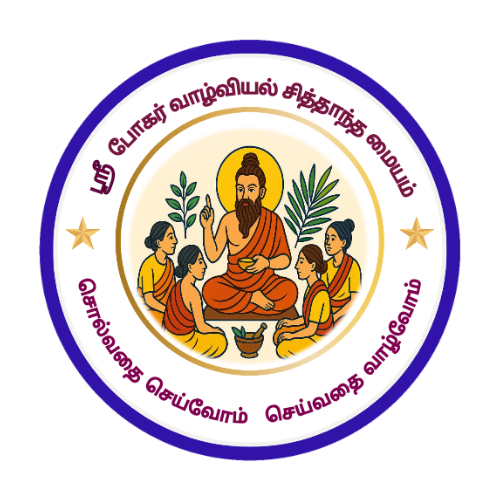

Core Slogans
Home
About
Slogans
Schedule
Workshop
Feedback
Application
குரு சரவணாம்பிகை அம்மா அவர்களின் ஊக்கப்படுத்தும் பொன்மொழிகள்
சொல்வதை செய்வோம், செய்வதை வாழ்வோம்.
நல்லவர்களாக இருக்கணும், வல்லவர்களாகவும் இருக்கணும்.
கேட்டால் சந்தோஷம், கேட்கவில்லையென்றால் ரொம்ப சந்தோஷம்.
எண்ணமே ஜெயம், எண்ணமே பேராற்றல், எண்ணமே வாழ்க்கை.
வார்த்தையே மந்திரம், தந்திரம், எந்திரம்.
மனமது செம்மையானால் மருந்துக்கே இடமில்லை.
எழுமின்! விழிமின்! குறிக்கோளை எட்டும் வரை உழைமின்!
தன்னை அறிதல், உணர்தல், பிரம்ம ஞானம்.
மனோ தத்துவ நிலைகள்: சரணாகதி, கிருஷ்ணத்துவம், ருத்ரத்துவம், சாணக்கியத்தனம்.
Alert and Awareness
A.B.C.D. என்று திட்டமிட்டு வெற்றியடைய வேண்டும்.